Fullescabio
Fullescabio es una aplicación móvil de e‑commerce orientada a la compra de bebidas alcohólicas. El proyecto comprende el diseño de interfaces, el desarrollo de un Design System y la creación de un prototipo interactivo para representar los principales user flows de navegación y compra.
- Rol
- UI Designer
- Tipo
- Proyecto académico
- Materia
- UI (User Interface)
- Año
- 2024 · Actualización 2026
- Herramientas
- Figma, Illustrator
- Plataforma
- Aplicación móvil
01
Contexto
La consigna. Fullescabio fue un proyecto académico individual desarrollado para la materia UI (User Interface), durante el segundo cuatrimestre de 2024.
El enfoque. El trabajo se centró en el diseño de interfaces: estructura de pantallas, jerarquía visual, organización de la información y desarrollo de componentes.
La revisión. En 2026 retomé el proyecto para desarrollar una nueva versión, revisar las decisiones de diseño y aplicar lo aprendido desde entonces.
Evolución del proyecto
2024 · Desarrollo original
Flowcharts
Definición de recorridos
Wireframes
Estructura de pantallas
Style guide
Estilos y componentes
High fidelity
Interfaz visual y prototipo inicial
2026 · Revisión y ampliación
Mid fidelity
Revisión de estructura y flows
High fidelity
Diseño de interfaz
Design System
Refinamiento y consolidación
Prototipo
Actualización de interacciones y recorridos
02 · 2024
Punto de partida
La versión original de 2024 se desarrolló con los conocimientos y las herramientas que manejaba en ese momento. Definí los recorridos mediante flowcharts, estructuré las pantallas con wireframes low fidelity, establecí una style guide y diseñé una primera versión de la interfaz en high fidelity.
Wireframes
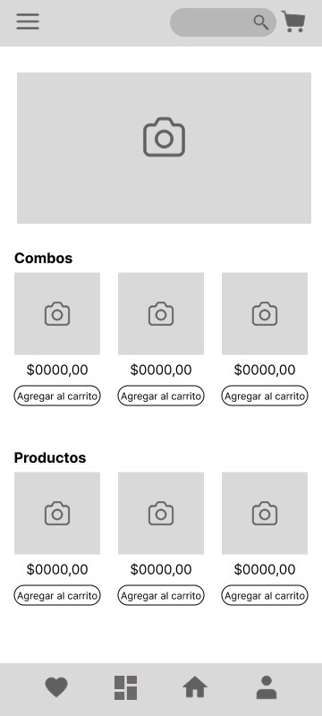
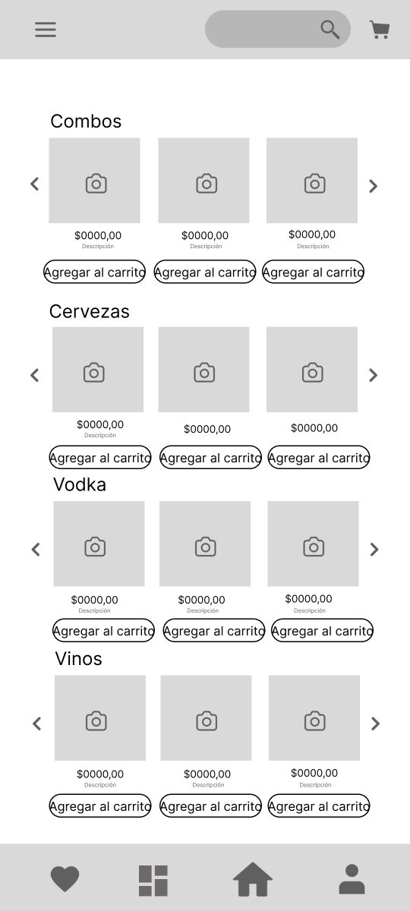
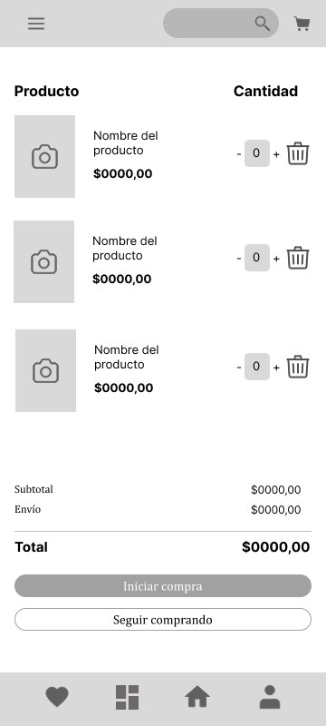
03 · 2026
Nueva versión
Para esta nueva versión, retomé la estructura y revisé los user flows mediante wireframes mid fidelity, antes de avanzar con el rediseño de las interfaces en high fidelity.
A partir de la style guide inicial, desarrollé un Design System más completo, incorporando fundamentos visuales, componentes reutilizables, propiedades, variantes y estados. El objetivo fue establecer criterios de diseño consistentes y facilitar su aplicación en toda la interfaz.
Mid fidelity
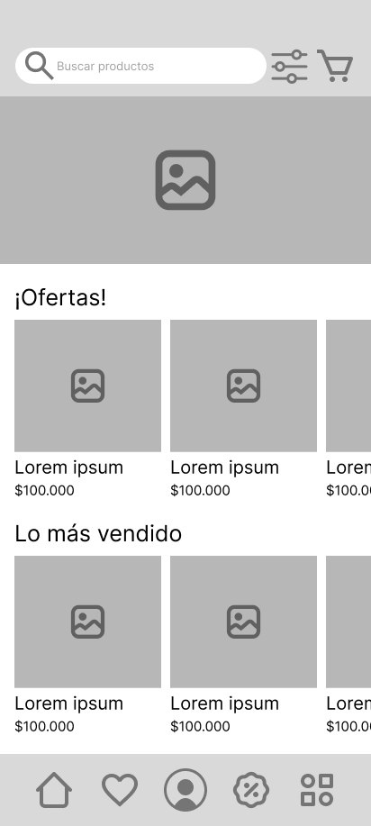
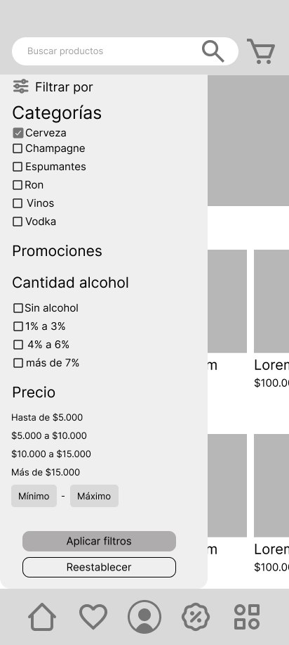
Antes y después
Las mismas pantallas en sus versiones de 2024 y 2026. Una comparación que permite ver la evolución de la estructura, la jerarquía visual y los componentes de la interfaz.
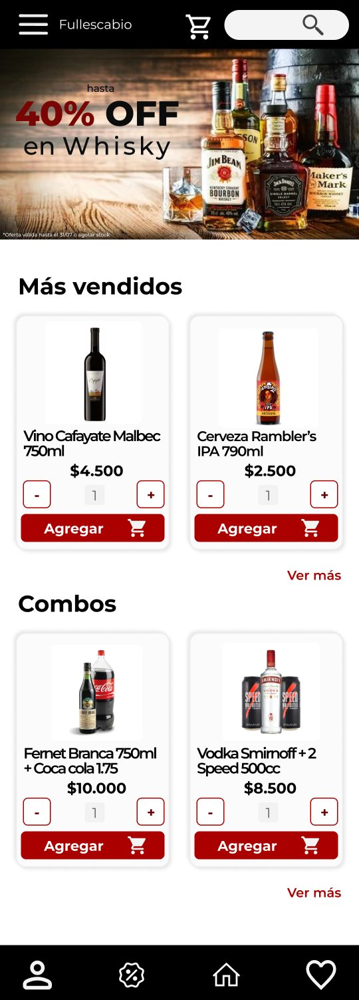
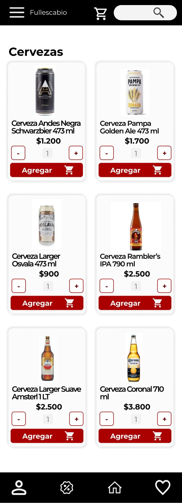
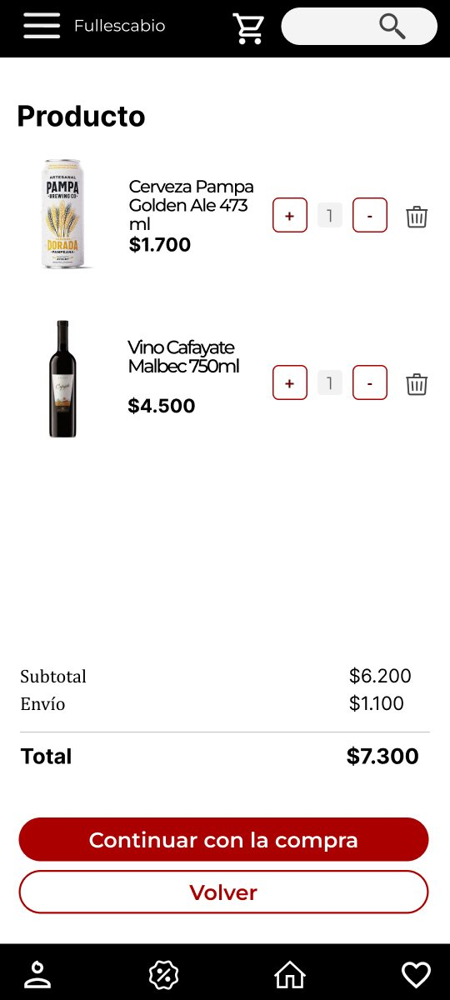
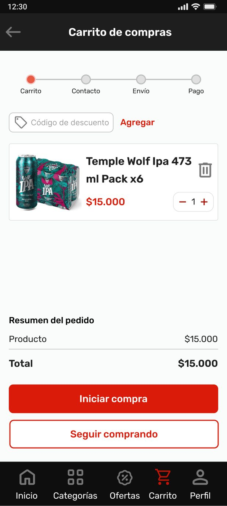
04 · 2026
User flows
La experiencia se organiza en cuatro recorridos principales: acceso a la cuenta, registro, búsqueda de productos y proceso de compra. Cada recorrido contempla las pantallas involucradas, sus validaciones, estados de error y mensajes de confirmación.
Inicio de sesión y recuperación
Acceso a la cuenta mediante validación de credenciales y recuperación de contraseña a través de un código de verificación enviado por correo electrónico.
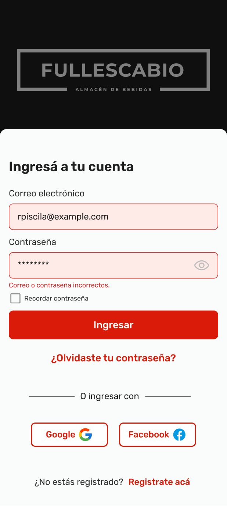
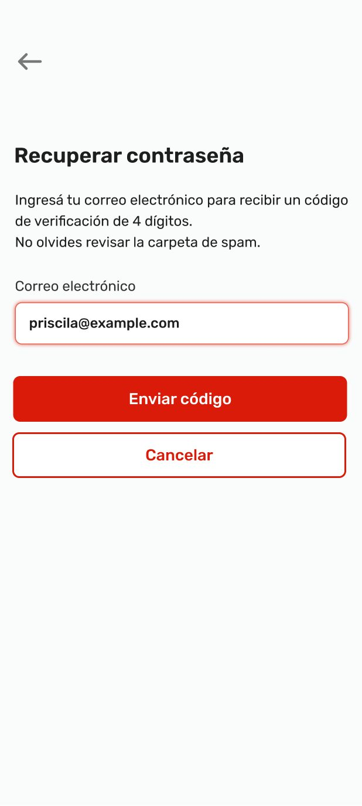
Registro y validación de cuenta
Registro de nuevos usuarios, ingreso de datos personales, validación mediante código y restricciones de acceso para menores de 18 años.
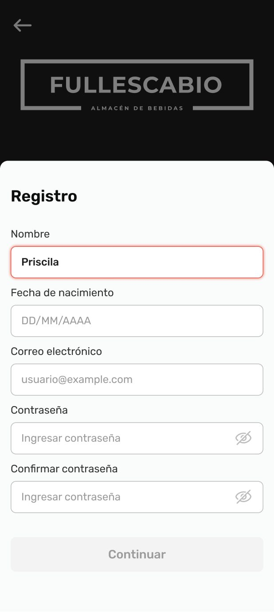
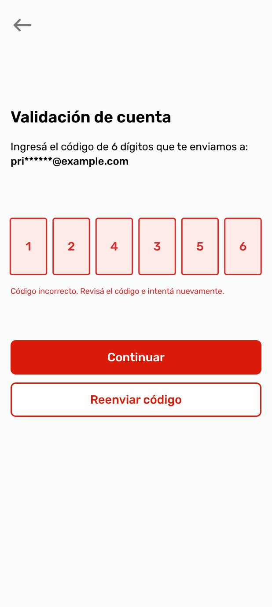
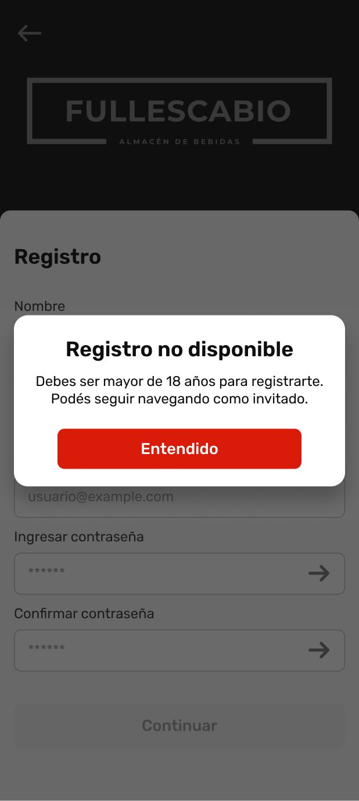
Búsqueda y filtros
Exploración del catálogo y búsqueda de productos mediante filtros por categoría, graduación alcohólica, tipo de envase y precio. El recorrido incluye la visualización de resultados y la incorporación de productos al carrito.
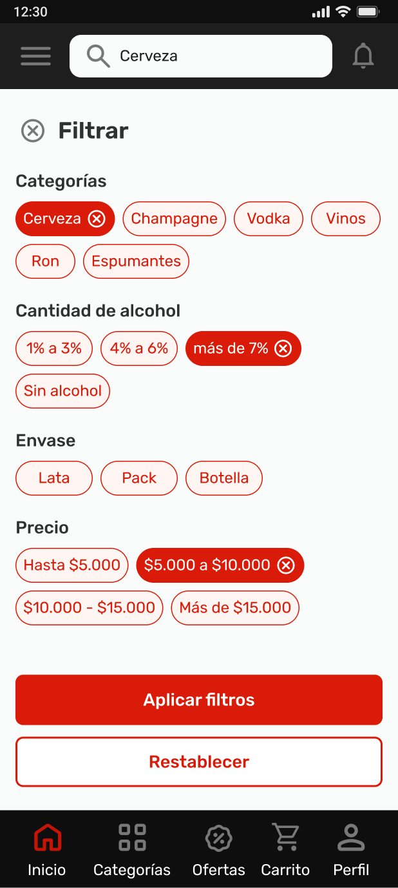
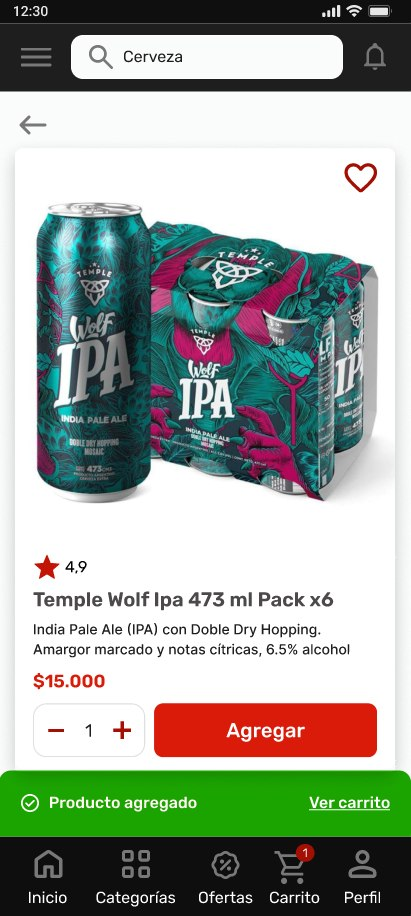
Proceso de compra
Comprende la revisión del carrito, la carga de datos de contacto, la selección del método de envío y el ingreso de los datos de pago. Finaliza con la confirmación de la compra o la notificación de un error en la transacción.
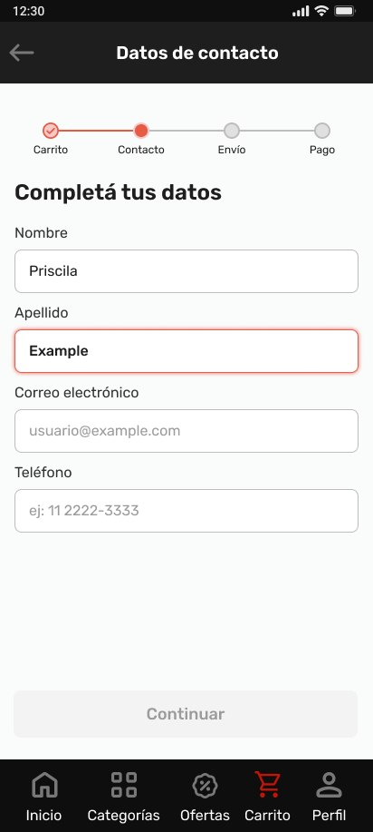
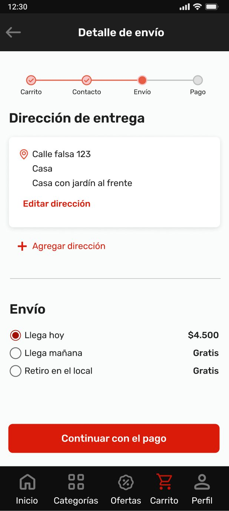
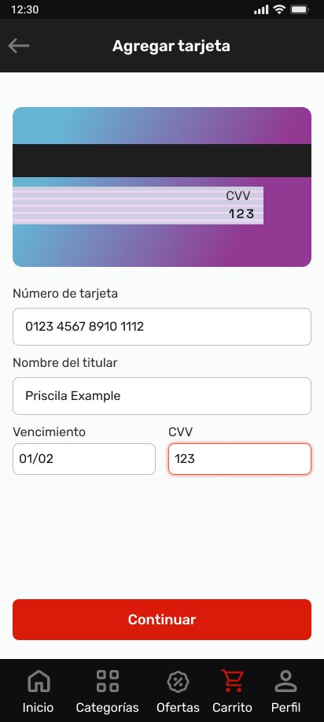
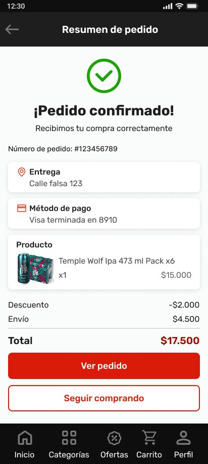
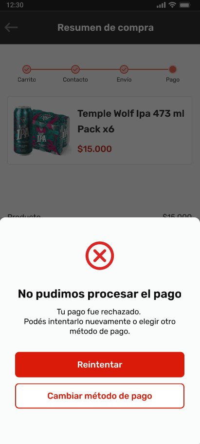
05 · 2026
Design System
Fundamentos. Definición de la grilla, escala de espaciado, elevaciones, tipografía, paleta cromática, colores semánticos e iconografía.
Componentes. Diseño y configuración de botones, campos de texto, checkboxes, radio buttons, chips, steppers, tarjetas, modales, toasts, navegación, skeletons, estados de carga, tarjetas de crédito e indicadores de progreso.
ColorTokens
Primario · 50–900
Neutros · 0–950
- Primario#DA1B09
- Acento#D8A500
- Éxito#1BA400
- Advertencia#F59E0B
- Información#1077B1
- Error#DC2626
TipografíaRubik · px
Heading 132 / 48
Heading 228 / 44
Heading 324 / 38
Heading 420 / 32
Body Large18 / 26
Body Medium16 / 24
Body Regular16 / 20
Body Small12 / 16
ComponentesEstados
Botones · radio 8 px · borde 2 px
En el sistema
- Campos de texto
- Checkbox
- Radio
- Chips
- Stepper
- Cards
- Modales
- Toast
- Barra de navegación
- Skeleton
- Carga
- Tarjeta de crédito
- Indicadores de progreso
IconografíaSet
Material Symbols · outlined · trazo 3 px
Ver el Design System completo en Figma(se abre en una pestaña nueva)
06 · 2026
Prototipo
Desarrollé un prototipo interactivo en Figma para representar los principales recorridos de la aplicación, conectar las pantallas y definir las interacciones y respuestas de la interfaz.
07
Aprendizajes
Retomar Fullescabio me permitió revisar mi propio proceso de diseño y reconocer cómo había evolucionado mi criterio desde la primera versión. Pude identificar aspectos que necesitaban mayor atención y comprender la importancia de abordar una interfaz desde su estructura, funcionalidad y composición visual.
Profundicé en la construcción de sistemas de diseño, aprendiendo a establecer criterios consistentes, organizar componentes reutilizables y definir sus propiedades, variantes y estados.
También avancé en prototyping, trabajando con transiciones, interacciones, validaciones y mensajes de feedback para representar de forma más completa los distintos estados de la experiencia.
Este proceso me enseñó que diseñar no consiste solamente en llegar a una solución visual, sino también en revisar decisiones, iterar, establecer prioridades y reconocer cuándo una propuesta está suficientemente resuelta.